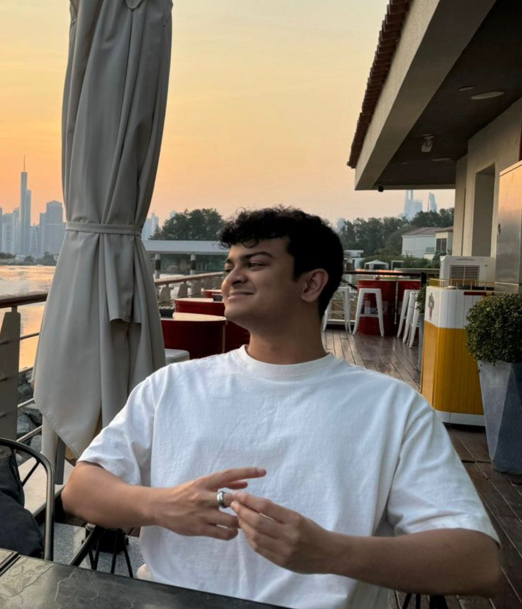

I build autonomous systems that bridge hardware, perception, and intelligence - from LiDAR-based 3D mapping pipelines to deep RL agents and deployed AI. MS Robotics at Northeastern. Ex-Mercedes-Benz. Open to roles across the US.
Built a real-time 3D mapping and odometry pipeline integrating LeGO-LOAM with ROS2, using a Velodyne VLP-16 LiDAR fused with IMU and GPS data. Ran multiple closed-loop campus runs achieving stable feature-based maps for autonomous navigation. Tuned extrinsic calibration, motion compensation, and sensor fusion parameters for robust outdoor odometry.
Designed, trained, and benchmarked 10 deep RL agents — PPO, Dueling DQN, Quantile DQN, and Attention-DQN variants — across Atari games and a custom-built Cubefield environment. Self-taught policy gradient methods, actor-critic architectures, and quantile regression, then implemented and compared them directly using PyTorch and OpenAI Gym.
Privacy-preserving fall detection using WiFi RSSI signal disturbances — no cameras, no wearables. Built a dual-ESP32 architecture, assembled a labelled dataset of 8,880 recordings, and trained supervised ML classifiers for real-time anomaly detection.
Multimodal home security robot with facial recognition, danger sound detection, and GPS-based navigation running simultaneously onboard. Connected to Firebase cloud alerts. Published as a research paper at EECON 46.
I'm a robotics and AI engineer pursuing my MS in Robotics at Northeastern University, with a focus on autonomous systems, perception, and the hardware-to-intelligence stack. My undergrad was in Mechatronics Engineering at Assumption University in Bangkok, where I graduated with Honours and spent time at the Intelligent Systems Laboratory working on vision and audio AI.
At Mercedes-Benz, I built ML-based part-replacement prediction pipelines and automated logistics tooling that ran across Southeast Asian operations. Before that, at a computer vision startup, I co-built a sound-based AI security system from raw data collection to live client demos — hitting 97% classification accuracy on hazard detection.
I'm drawn to problems where hardware and intelligence meet — autonomous vehicles, perception systems, humanoid robotics. I love building things end-to-end, from sensor calibration to deployed pipelines. Currently seeking full-time roles in the US in robotics, AV, or applied AI.
I'm actively looking for full-time roles in robotics, autonomous vehicles, or applied AI across the US. If you're working on hard problems in perception or autonomy, reach out.